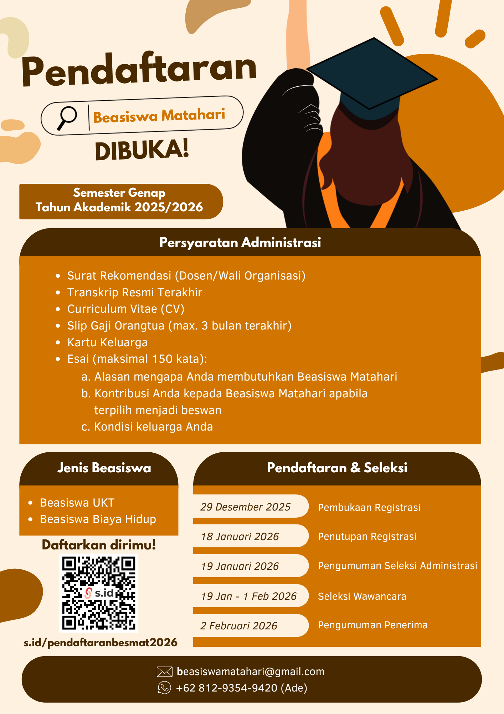
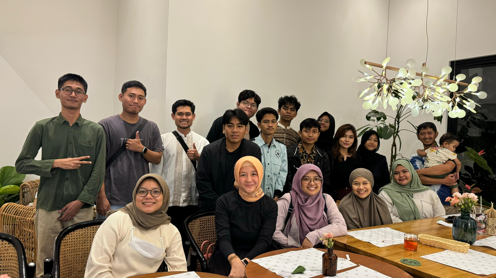

Beasiswa Matahari
Dukungan Pendidikan untuk Mahasiswa S1 Astronomi ITB
Beasiswa Matahari menghubungkan alumni, donatur, dan mahasiswa aktif agar bantuan pendidikan terasa lebih dekat, jelas, dan mudah diikuti.
Di sini Anda bisa langsung memahami misi program, memilih jalur aksi, dan menemukan halaman yang paling relevan tanpa harus menelusuri banyak klik.

Program aktifAkses Cepat
Tentang Program
Beasiswa yang Terasa Dekat, Transparan, dan Personal
Berbasis rasa kekeluargaan, Beasiswa Matahari hadir untuk membantu mahasiswa Astronomi ITB tanpa membuat proses dukungan terasa rumit.
Berawal dari lima alumni muda Astronomi ITB yang ingin memberikan kontribusi nyata kepada almamaternya, muncullah ide untuk melahirkan Beasiswa Matahari. Beasiswa yang datang dari donasi alumni Astronomi ITB dari berbagai angkatan untuk dikembalikan ke Mahasiswa yang masih aktif di Astronomi ITB. Beasiswa Matahari bertujuan untuk memberikan bantuan biaya pendidikan untuk mahasiswa Astronomi ITB yang membutuhkan, khususnya untuk mereka yang kesulitan mendaftar beasiswa lain yang terhalang administrasi. Selain itu, Beasiswa Matahari juga ingin mendorong para penerima beasiswa (beswan) agar berpartisipasi aktif dalam kegiatan Astronomi baik di prodi, himpunan, atau masyarakat luas. Berbasis rasa kekeluargaan, Beasiswa Matahari hadir lebih dekat dengan mahasiswa Astronomi sehingga proses seleksi diadakan pun lebih jelas dan personal. Seperti namanya Matahari, sumber energi utama di tata surya kita, kami ingin Beasiswa ini menjadi sumber bantuan yang meringankan beban pikiran Mahasiswa sehingga dapat meningkatkan kualitas Mahasiswa Astronomi.

Untuk Beswan
Pendaftaran Beasiswa
Kriteria Utama
- Mahasiswa aktif Astronomi ITB.
- Mengisi formulir pendaftaran di halaman formulir.
- Mendaftar sebelum tenggat waktu.
- Mengikuti seleksi berkas dan wawancara jika lolos.
Timeline Semester Ganjil TA 2026/2027
Untuk Donatur
Program Donasi
Informasi Penting
Untuk sementara ini, Beasiswa Matahari hanya menerima donasi dari akumni Program Studi Astronomi ITB. Pendaftaran dapat dilakukan kapan saja.
Dua paket donasi utama disusun agar Anda bisa memilih skema yang paling sesuai dengan ritme kontribusi yang diinginkan.
Sun Flare
- Minimal donasi Rp 2.500.000 per semester.
- Minimal periode 1 semester.
- Pembayaran dilakukan sekali waktu.
Sun Spot
- Minimal donasi Rp 50.000 per bulan.
- Minimal periode 6 bulan.
- Transfer dapat diakumulasikan di awal periode.
Aktivitas dan Pengurus
Beasiswa Matahari juga hidup lewat pertemuan antar elemen Beasiswa Matahari (beswan, donatur, dan pengurus) dan aktivitas pendukung akademik.
Membangun Jejaring dan Kebersamaan
Beasiswa Matahari hadir bukan hanya sebagai bantuan finansial, tetapi juga sebagai wadah untuk saling terhubung. Melalui kegiatan seperti Sehari Bersama Beasiswa Matahari, kami memfasilitasi mahasiswa, alumni, dan pengurus untuk berbagi pengalaman dalam suasana yang bersahabat.
Untuk mengenal lebih dekat tim yang mengawal keberlangsungan program ini, silakan kunjungi halaman profil pengurus kami.